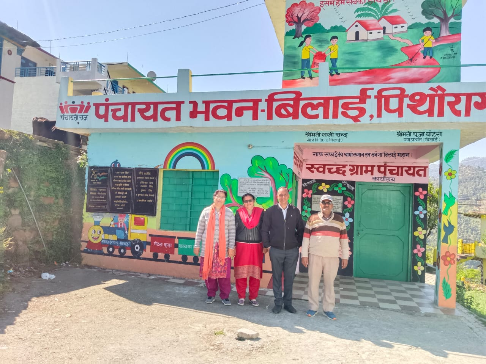
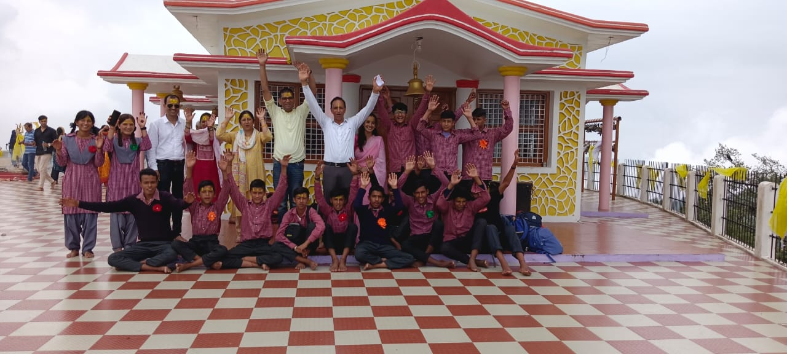

Taekwondo is the ultimate self-defense system and is a favorite among people of all ages and fitness levels. Martial arts are not just about getting stronger, faster, and better at fighting—they’re also about developing discipline, perseverance, self-discipline, and mental toughness. This is the most important thing to do. You have to keep yourself safe. If you want to protect yourself, there is no better way than taekwondo. Today we are talking about What are the importance and benefits of Taekwondo self-defense. Taekwondo is an excellent martial art that teaches effective self-defense skills while helping you develop greater confidence and focus. If you are thinking about becoming a Taekwondo practitioner, you will need to know why this martial art is very beneficial for your personal and professional life. If you want to know what the importance and benefits of Taekwondo as self-defense and why it’s so effective at self-defense, then read this article.

A Teacher is someone who acts as a guide and inspiration to people – both young and old. He/she is charged with the responsibility of creating awareness as well as opening the mind of people by instilling values, morals, and ethics. Teachers efforts are recognized during the teacher’s day. They shape minds, and we annually celebrate their contribution to the development of society in the form of Teachers’ day across the world. However, We celebrate The International Teachers Day on October 5th annually.thus in uk govt. schools celebrate this day as festival
Rehabilitation of Abandoned Villages in Uttarakhand During a recent inspection of the central sector of the Line of Actual Control (LAC) in Uttarakhand, Chief of Defence Staff (CDS) General Anil Chauhan directed Army formations to assist in rehabilitating two villages: Nelang and Jadung. These villages were abandoned by residents during the 1962 Indo-China war, as they relocated to safer areas in Uttarkashi and nearby regions1. Key Points: Historical Context: Nelang and Jadung were evacuated during the 1962 war, making them the first settlements from the border. Challenges: Identifying the true heirs of the vacant land after over 60 years poses a significant challenge due to the passage of time and the death of many original landowners. Revitalization Efforts: Return of Villagers: Army units, along with ITBP personnel and civilian authorities, are facilitating the return of villagers to these abandoned villages. Commercial Activities: To sustain livelihoods, there’s a need to revitalize commercial activities within the villages. Tourism Opportunities: The Army is exploring tourism prospects by enhancing infrastructure. Clear skies and an altitude of 13,000 feet make stargazing a potential activity in the area. Jadh Festival: Efforts are underway to promote the Jadh festival in Jadhang village, along with plans to construct local temples. Transforming Villages: Once commercial activities thrive, these villages accessible from the renowned tourist destination of Harsil can become sought-after destinations for bikers and travelers1. The rehabilitation of these villages not only restores their vibrancy but also strengthens the border communities’ resilience.
School Excursions in Uttarakhand: Enriching Learning Beyond the Classroom School excursions play a crucial role in the holistic development of students. In Uttarakhand, government schools recognize the importance of these outings and organize them to enhance students’ educational experiences. Here are some key points about school excursions in Uttarakhand: Purpose and Benefits: Educational Enrichment: Excursions provide practical learning experiences beyond textbooks. Students get to explore historical sites, natural wonders, and cultural landmarks. Bonding and Camaraderie: Excursions foster stronger bonds among students and teachers. They create memories that last a lifetime. Break from Routine: Stepping out of the classroom environment refreshes students’ minds and invigorates their curiosity. Destinations: Uttarakhand, with its rich history and natural beauty, offers numerous excursion destinations. Students visit places like: Historical Monuments: Fatehpur Sikri, Haridwar, and ancient temples. Natural Wonders: Nainital, Mussoorie, and scenic spots in the Himalayas. Wildlife Sanctuaries: Jim Corbett National Park and Rajaji National Park. Learning Opportunities: Students learn about local culture, history, and ecology. They observe architectural marvels, wildlife, and geographical features. Interactions with locals provide insights into regional traditions and lifestyles. Safety Measures: Schools prioritize safety during excursions. Teachers and staff ensure proper supervision and adherence to guidelines. Emergency contact numbers and medical facilities are readily available. Memorable Experiences: Students return with stories of adventure, discovery, and newfound knowledge. The excitement of boarding a bus, exploring new places, and sharing experiences with friends leaves a lasting impact. In conclusion, school excursions in government schools of Uttarakhand go beyond mere sightseeing. They contribute significantly to students’ overall growth, making learning enjoyable and memorable.
Certainly! Here’s a brief note on yoga practice in Uttarakhand: Yoga Certification Board (YCB): The Yoga Certification Board, established by the Ministry of Ayush, Government of India, is the only board set up by any government for certification in the field of yoga1. YCB certifies yoga professionals under various levels and categories, allowing them to select the level that aligns with their skills and competencies. Uttarakhand Government Initiatives: On International Yoga Day, the Uttarakhand government announced the establishment of a Yoga and Naturopathy Medicine Cell at the Ayurveda Directorate in the state2. This initiative aims to promote yoga and natural medicine practices among the people of Uttarakhand. Outsource Vacancy for Yoga Instructors: The Higher Education Department in Uttarakhand has advertised an outsource vacancy for 117 Yoga Instructors (Trainers)3. These instructors will contribute to spreading awareness about yoga and its benefits. Draft Yoga Policy: The Department of Ayurveda and Yunani Services, Uttarakhand is currently working on a Yoga Policy4. The draft policy is available for public review, emphasizing the importance of yoga in promoting health and well-being. In summary, Uttarakhand’s government recognizes the significance of yoga and is actively promoting its practice through various initiatives and policies.